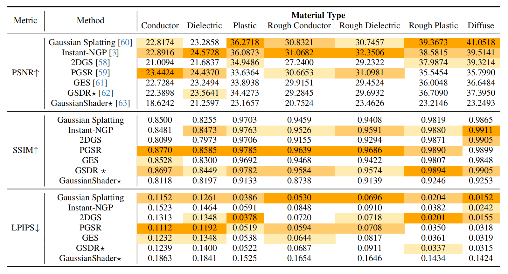
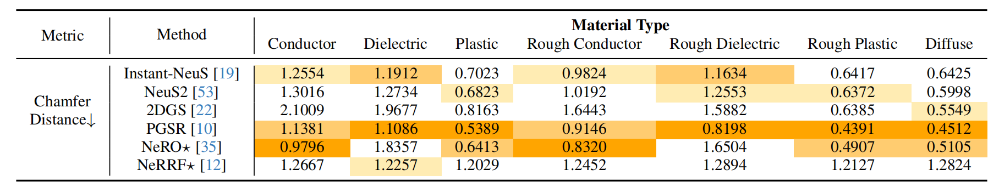
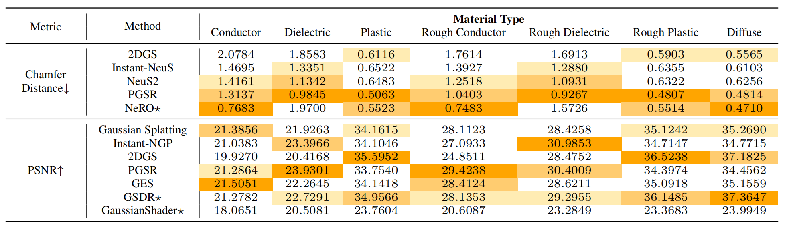
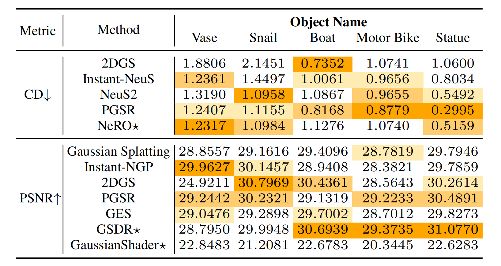
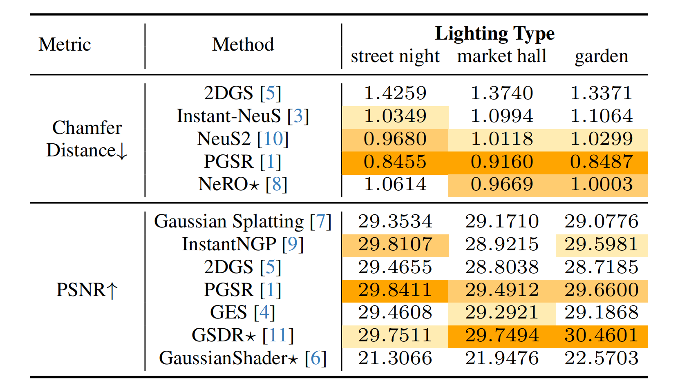

Table 1. Comparison of SOTA Novel View Synthesis Methods. A ⋆ denotes specialized methods.

Table 2. Comparison of SOTA 3D Reconstruction Methods. We report the Chamfer distance ×10−2. A ⋆ denotes specialized methods

Table 3. Ablation of Material Properties.

Table 4. Ablation of Geometric Shape.

Table 5. Ablation of Lighting condition.